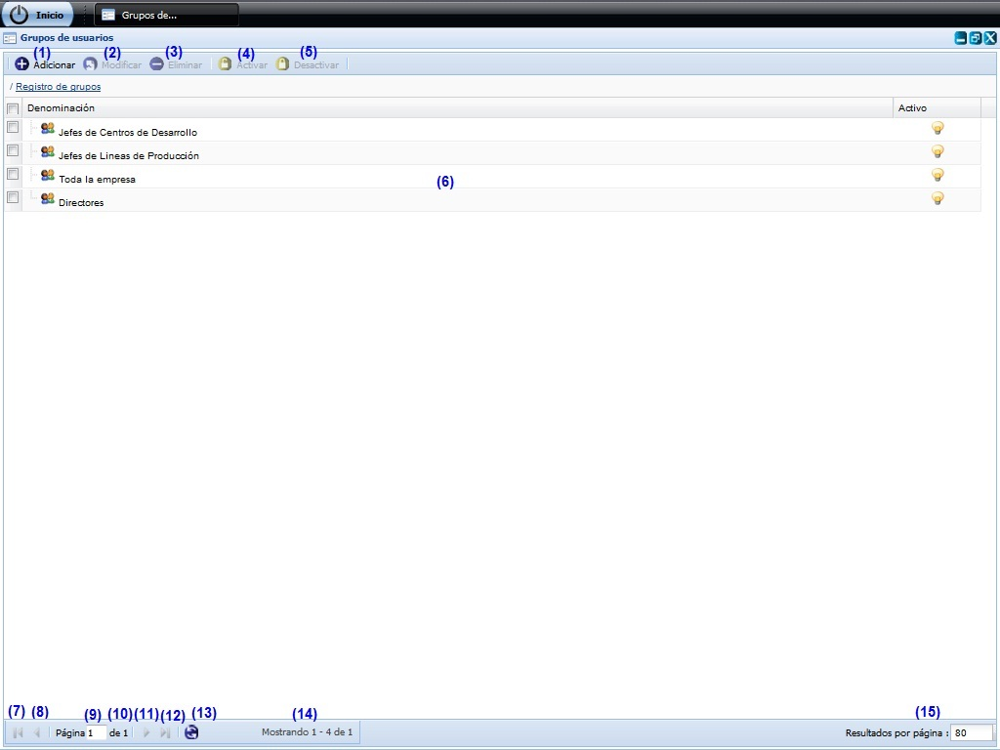
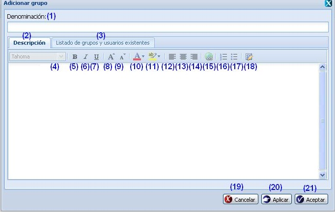
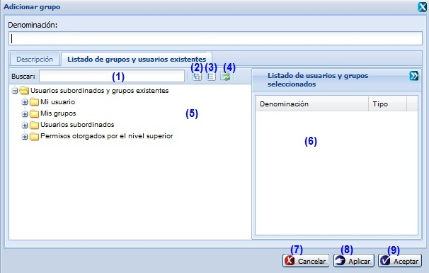
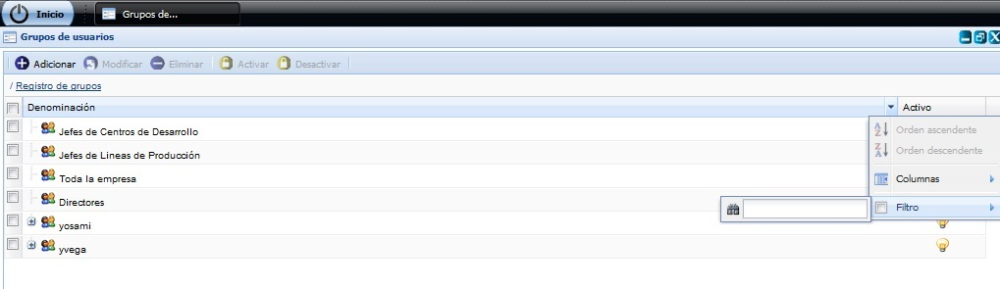

--Grupo de usuarios por rol --
Esta funcionalidad permite realizar la configuración de Grupo de usuarios necesario para la gestión de planificación de actividades. Para acceder a estas funcionalidades el usuario debe estar autenticado y debe seleccionar la ruta:Planificación de actividades/Configuración/Grupo de usuarios por rol, ver Figura 1.

Figura 1. Interfaz y acciones de la funcionalidad Grupos de usuarios.
Las diferentes opciones que conforman la figura anterior permiten:
- Adicionar grupo de usuarios, ver Adicionar grupo de usuarios, esta acción permite adicionar un grupo de usuarios, cuando se presione el botón Aceptar o Aplicar de la interfaz el sistema le mostrará un mensaje de información notificando que se adicionó el grupo de usuarios satisfactoriamente. La misma le permitirá al usuario a través de esta funcionalidad crear sus grupos, de forma tal que le sea más fácil a la hora de definir los involucrados a intervenir en algún Plan, Actividad y Objetivo entre otros.
- Modificar un grupo de usuarios previamente seleccionado en el listado. Para ejecutar esta funcionalidad debe seleccionar un grupo de los listados en la interfaz y seguidamente invocar a la acción Modificar que aparece en la parte superior. Una vez ejecutada la misma, el sistema le mostrará la interfaz con los datos cargados del mismo, posibilitando que se modifiquen los datos requeridos. Si al modificar el grupo de usuarios se introduce uno que ya existe, el sistema le mostrará un mensaje de error. La validación de cada uno de los campos de la interfaz será muy similar al descrito en el Adicionar grupo de usuarios.
- Eliminar un grupo de usuarios previamente seleccionado en el listado. Esta acción permite eliminar el(los) grupo(s) de usuarios deseado(s), una vez seleccionado(s) el(los) mismo(s) se procede a seleccionar la opción Eliminar de la interfaz, automáticamente se mostrará un mensaje de confirmación, que se puede Aceptar o Cancelar según sea el caso, de presionar la opción Aceptar el sistema le mostrará un mensaje de información sobre el éxito de la operación realizada, quedando eliminado(s) el(los) grupo(s) de usuarios seleccionado(s), si cancela el mensaje de confirmación, el sistema permanece en la interfaz principal y no elimina el(los) grupo(s) de usuarios. Inicialmente la opción Eliminar de la interfaz estará deshabilitado hasta tanto no se haya seleccionado al menos un grupo de usuario por rol. Se puede seleccionar uno o varios grupos de usuarios por rol para eliminar, dando clic sobre cada uno. Es importante tener en cuenta que se selecciona un grupo de usuario que se encuentra como involucrado en alguna funcionalidad (Actividades, planes y objetivos), no se podrán eliminar los mismos del sistema, para ello el sistema le debe mostrar un mensaje de información.
- Activar un grupo de usuarios previamente seleccionada en el listado. Esta acción permite activar un grupo de usuarios. Una vez seleccionado el mismo se procede a seleccionar la opción Activar de la interfaz, automáticamente el sistema le mostrará un mensaje de confirmación, que se puede Aceptar o Cancelar según sea el caso, de presionar la opción Aceptar el sistema le mostrará un mensaje de información sobre el éxito de la operación realizada, quedando activado el grupo de usuarios seleccionado, si cancela el mensaje de confirmación, el sistema permanece en la interfaz principal y no activa el grupo de usuarios. El botón Activar se habilitará después de seleccionar un grupo de usuarios desactivado.
- Desactivar un grupo de usuarios previamente seleccionada en el listado. Esta acción permite desactivar una columna. Una vez seleccionada la misma se procede a seleccionar la opción Desactivar de la interfaz, automáticamente el sistema le mostrará un mensaje de confirmación, que se puede Aceptar o Cancelar según sea el caso, de presionar la opción Aceptar el sistema le mostrará un mensaje de información sobre el éxito de la operación realizada, quedando desactivado el grupo de usuarios seleccionado, si cancela el mensaje de confirmación, el sistema permanece en la interfaz principal y no desactiva el grupo de usuarios. El botón Desactivar se habilitará después de seleccionar un grupo de usuarios activado.
- Se muestra el listado de grupos de usuarios insertados.
- Ir a la primera página, mostrando los primeros grupos de usuarios.
- Ir a la página anterior.
- Mostrar el número de la página donde se encuentra, se puede introducir el número de la página a la que se desea ir.
- Mostrar el número máximo de páginas.
- Ir a la siguiente página.
- Ir a la última página.
- Actualizar el listado de grupos de usuarios.
- Mostrar la cantidad de resultados encontrados.
- Seleccionar la cantidad de elementos a mostrar por páginas.
Adicionar grupo de usuarios
Se presiona el botón Adicionar de la interfaz, ver opción (1) de la Figura 1. Inmediatamente aparecerá una ventana donde se podrán especificar los datos relacionados con el grupo de usuarios que se desea adicionar, ver Figura 2.

Figura 2. Interfaz Adicionar grupo.
Las opciones de la Figura anterior permiten:
- Introducir la denominación del grupo de usuarios que desea insertar.
- Introducir una breve descripción del grupo a insertar. Este dato no es obligatorio.
- Seleccionar usuarios u otros grupos de usuarios para incluirlos en el grupo de usuarios que está adicionando. Si selecciona esta opción: Se muestra en la interfaz Adicionar grupo, dos paneles, ver Figura 3.
- Cambiar la fuente.
- Aplicar el formato de negrita al texto seleccionado.
- Aplicar el formato de cursiva al texto seleccionado.
- Aplicar el formato de subrayado al texto seleccionado.
- Aumentar el tamaño de la fuente.
- Disminuir el tamaño de la fuente.
- Cambiar el color del texto seleccionado.
- Cambiar el aspecto del texto como si estuviera marcado con un marcador.
- Alinear el texto a la izquierda.
- Centrar el texto.
- Alinear el texto a la derecha.
- Hacer del texto seleccionado un hipervínculo.
- Inicia una lista de numeración.
- Inicia una lista de viñetas.
- Cambia el modo de edición de código.
- Cancelar las acciones y salir de la interfaz sin guardar los datos.
- Guardar los datos y limpiar los campos de la interfaz, permitiendo adicionar otro grupo de usuarios.
- Adicionar los datos del grupo de usuarios al listado y cerrar la interfaz.
Validación de los campos:
- El campo Denominación es obligatorio, en caso de dejar este campo vacío y presionar los botones Aceptar o Aplicar el sistema le notificará el error, subrayando el campo en rojo y mostrando un mensaje de error, al pasar el cursor del mouse por encima del campo subrayado, y el mensaje de error “Por favor verifique hay campo(s) vacío(s).”. Este campo acepta caracteres alfanuméricos y los caracteres especiales (“%#@!*() _;:,?-.). Al escribir otro tipo de carácter no permitido notificará subrayando el campo en rojo y mostrando el mensaje. También debe tener en cuenta que no podrá adicionar un grupo con la misma denominación que otro, de suceder esto el sistema le notificará mostrándole un mensaje de error.
- El campo Descripción puede ser vacío y admite cualquier tipo de caracteres de longitud infinita.
- Una vez insertado el grupo, este se archivará con estado activo.

Figura 3. Interfaz Adicionar grupo de usuarios/Selección de usuario o grupos de usuarios.
Las opciones de la Figura anterior permiten:
- Introducir un criterio por el que desea buscar un determinado usuario.
- Expandir el árbol de usuarios.
- Colapsar el árbol de usuarios.
- Refrescar todos los usuarios.
- Desglosar el árbol de grupos de usuarios, para seleccionar el(los) usuario(s) que se desea(n) reutilizar del grupo de usuario seleccionado. Se realiza la selección desde algún nivel de la estructura definida en el sistema o desde grupos de usuarios previamente creados. Este árbol es conocido como el clasificador de involucrados, donde a partir de configuraciones previamente efectuadas se pueden escoger el(los) usuarios que desea incluir al grupo a insertar.
- Listado de usuarios y grupos de usuarios seleccionados.
- Cancelar las acciones y salir de la interfaz sin guardar los datos.
- Guardar el grupo de usuario, actualizar los datos de la interfaz, limpia los campos y permanece en la interfaz, permitiendo así seleccionar otro usuario(s) para reutilizar el grupo de usuarios.
- Adicionar el(los) usuario(s) a un grupo de usuarios.
Buscar grupo de usuarios
Para realizar esta funcionalidad se debe estar en la interfaz principal Grupos de usuarios, ver Figura 1, una vez que accedió a la misma se presiona clic en el botón  que aparece en la parte derecha de cada columna, ver Figura 4.
que aparece en la parte derecha de cada columna, ver Figura 4.

Figura 4. Búsqueda por filtrado de grupos de usuarios de la interfaz.
Se despliega la columna y se ofrece la posibilidad de realizar búsqueda mediante filtrado. Se introduce o selecciona el criterio de filtrado según la información que brinde la columna seleccionada. Inmediatamente se presiona la tecla Enter y el sistema mostrará en la interfaz los Grupos de usuarios según el criterio de filtrado seleccionado. En caso de que no existan Grupos de usuarios a mostrar para el criterio de filtrado seleccionado el sistema le notificará mostrando el siguiente mensaje de información: “No existen datos que se correspondan con los criterios de búsqueda especificados.”.